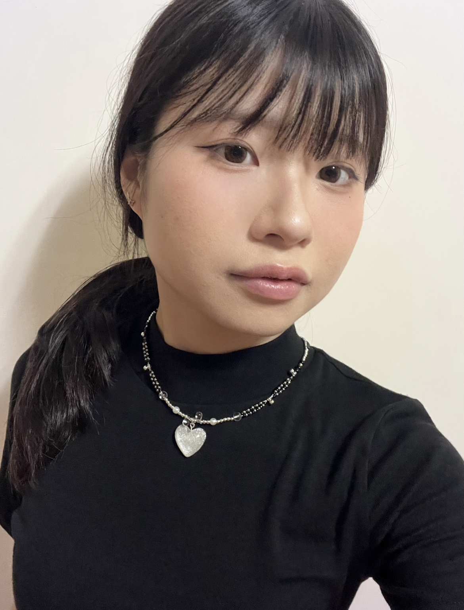

C:\Documents\Elyra\Profile.txt

Elyra
Personal Intro
我是一個喜歡觀察、思考，並習慣將情感寄託於創作的人。 作為一名 INFJ，我擁有敏銳的直覺，能在喧囂中捕捉到微小的細節與情緒，並將其轉化為設計的靈感。 在網頁設計、視覺表達、程式的世界裡，我特別熱愛「沒有固定答案」的開放性。 對我而言，結構的清晰是骨架，而細節的表達則是靈魂，我希望讓作品在理性邏輯下，依然能透出人文的溫度與故事感。 朋友們常形容我是一個溫柔且可靠的傾聽者。 在團隊中，我會主動詢問每一個人的意見，也會說出自己的看法且仔細觀察被忽視的需求，並在關鍵時刻提供具備同理心且實質的建議。
{
"identity": {
"name": "Elyra",
"mbti": "INFJ",
},
"internal_process": {
"status": "Processing fine-grained emotions...",
"interests_logic": [
{
"activity": "散步 (Mindful Walking)",
"attribute": "放鬆心情與靈感擷取",
"description": "透過漫步感受光影、空氣與城市的呼吸。這不僅是放鬆，更是對『空間感』的深度修煉，讓我學會在設計中運用留白與節奏，捕捉那些被忽視的細微美感。"
},
{
"activity": "漫畫與故事 (Manga & Narratives)",
"attribute": "人類行為與心境解構",
"description": "沉浸於分鏡與角色的內心戲。漫畫教會我如何代入不同人格的視角，這讓我具備了極強的同理心，能精準預判使用者在面對介面時的情緒起伏與潛在需求。"
},
{
"activity": "閱詩與文字 (Poetry & Self-Reflect)",
"attribute": "情緒韌性與精煉表達",
"description": "詩是靈魂的避風港。在精煉的文字中尋找共鳴並慰藉自我，這訓練了我用最少、最溫暖的語彙傳達深刻意義的能力，並在高壓環境中維持核心系統的穩定。"
},
{
"activity": "溜直排輪 (In-line Skating)",
"attribute": "動態平衡與危機應變",
"description": "在速度中尋求重心的穩定。這項運動讓我體會到：即便外界環境快速變遷或處於高壓失衡狀態，只要核心穩固，就能冷靜地做出優雅且精確的轉向判斷。"
}
]
},
"log": "System running perfectly. All quiet activities contribute to a louder creative impact."
}.png)
✧ DRAG A CAP TO KITTY! ✧